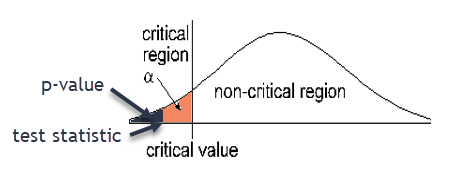
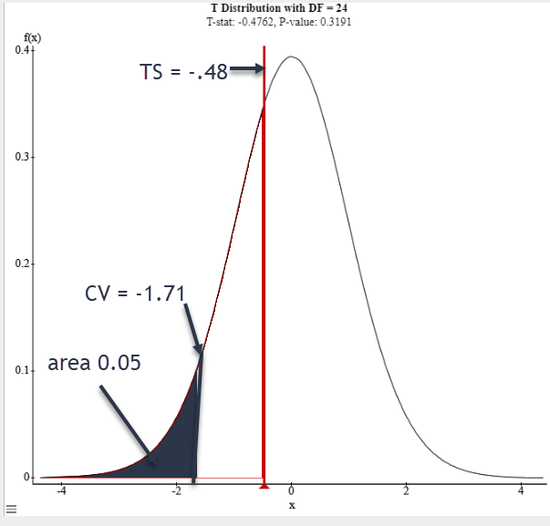
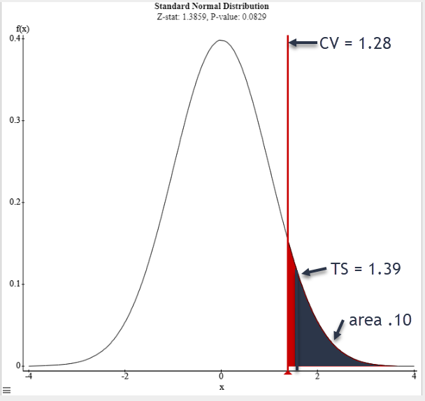

4.3 Hypothesis Testing for Means
Realistically, if we are testing a claim about the mean of a population, we do not know the standard deviation of the population. Therefore, we must use the student t-distribution when hypothesis testing for means.
- Changing a Tire: The length of time to change a tire is normally distributed. A random sample of ten tire changes is taken with a mean of 22.63 minutes and a standard deviation of 2.98 minutes. Use a 0.05 significance level to test the claim that the mean time to change a tire is less than 25 minutes.
- The original Claim:
\(\mu < 25\) - \(H_0\):
\(\mu \geq 25\) - \(H_A\):
\(\mu < 25\) - Type of Test:
Left-tailed test - Level of Significance:
\(\alpha =.05\) - Degrees of Freedom (n-1):
\(10-1=9\) - Critical Value(s) (use T calculator in Stat Crunch with area \(\alpha\) )::
\(t=-1.8331\) 
- Test Statistic:
\(t=\frac{\overline{x}-\mu}{\left(\frac{s}{\sqrt{n}}\right)}=\frac{22.63-25}{\left(\frac{2.98}{\sqrt{10}}\right)}=-2.5150\)

- p-value:
0.0165 - Decision about the null:
Reject \(H_0\) Reason 1: 0.0165 < .05 or Reason 2: -2.5150 is in the rejection region
- Concluding statement about the claim:
There is sufficient evidence to support the claim the mean time to change a tire is less than 25 minutes.
- The original Claim:
- Age of Cars: The mean age of cars driven by Pellissippi State students is seven years. The Dean of Students claims that this is an accurate statement for his students. A random sample of 31 cars in the East Parking Lot on campus showed a mean age of 8.1 years with a standard deviation of 5.1 years. Test the Dean’s claim at the 0.01 significance level.
- The original Claim:
\(\mu = 7\) - \(H_0\):
\(\mu = 7\) - \(H_A\):
\(\mu \neq 7\) - Type of Test:
Two-tailed test - Level of Significance:
\(\alpha =.01\) - Degrees of Freedom:
\(31-1=30\) - Critical Value(s):
\(t=\pm 2.750\) Determines shaded area(s) - Test Statistic:
\(\mathrm{t}=\frac{\overline{x}-\mu}{\left(\frac{s}{\sqrt{n}}\right)}=\frac{8.1-7}{\left(\frac{5.1}{\sqrt{31}}\right)}=1.20089\)


- p-value:
0.2392 - Decision about the null:
Fail to reject \(H_0\) Reason 1: 0.2392 > .01
Reason 2: 1.20089 is not in the rejection region - Concluding statement about the claim:
There is not sufficient evidence to reject the claim the mean age of cars driven by PSCC students is 7 years.

- The original Claim:
- Class Size: You receive a brochure from a large university. The brochure indicates that the mean class size for full-time faculty is fewer than 31 students. You want to test this claim. You randomly select 18 classes taught by full-time faculty and determine the class size of each. The results are shown in the table below. At a 0.01 significance level, can you support the university’s claim?
34 26 28 33 32 37 28 25 29 26 28 37 30 31 25 29 31 28 Sample Statistics: \(\overline{x}=29.8333333 \quad s=3.666221 \quad n=18\)
- The original Claim:
\(\mu < 31\) - \(H_0\):
\(\mu \geq 31\) - \(H_A\):
\(\mu < 31\) - Type of Test:
Left-tailed test - Level of Significance:
\(\alpha =0.01\) - Degrees of Freedom:
\(18-1=17\) - Critical Value(s):
\(t=-2.5669\) Determines shaded area(s) - Test Statistic:
\(t =\frac{\overline{x}-\mu}{\left(\frac{s}{\sqrt{n}}\right)} = \frac{29.833333-31}{\left(\frac{3.66621}{\sqrt{18}}\right)}=-1.3501\)

- p-value:
0.0973 - Decision about the null:
Fail to reject \(H_0\) Reason 1: 0.0973 > .01
Reason 2: -1.3051 is not in the rejection region
- Concluding statement about the claim:
There is not sufficient evidence to support the claim the mean class size for full time faculty is fewer than 31 students.

- The original Claim:
Goldfish Smile Hypothesis Testing
Claim: The proportion of all goldfish with smiles is "less than, equal to, or greater than" 50% (choose one)
Your claim: _________________________
One possible choice is to claim that p > .50. The solutions on the rest of the activity will be based on this claim. However, this is not what you are required to choose when you complete this in class.
Sample Data
Number of goldfish: n = _______________
Number of SMILING goldfish: x = _______________
\( \hat{p}=\frac{x}{n} \) (the sample proportion) = _______________
H0: _______________
Ha: _______________
\( \alpha = .05\)
Decision: __________________________________________________
Concluding Statement:
There is not sufficient evidence to support the claim that the proportion of all goldfish with smiles is greater than 50%.
Use the sample to construct a 95% confidence interval for the proportion of smiling goldfish.___________________________________
\( (0.257, 0.443) \)/p>
What decision about your claim should you make based on the confidence interval?
Comparing Hypothesis Testing for the Mean and Hypothesis Testing for a Proportion
| Question | It is claimed that the average time it takes to eat an apple is less than 4 minutes. A random sample of 25 apple eaters takes an average of 3.8 minutes to eat an apple with a standard deviation of 2.1 minutes. Test the claim using a 0.05 significance level. | It is claimed that more than 15% of sneakers that are sold attach with Velcro. A sample of 135 sneakers finds that 26 of them attache with Velcro. Thest the claim using a 0.10 significance level. |
|---|---|---|
| Type of Test: (Mean T-Test or Proportion Z-Test) | |
|
| Hypothesis | Claim:
H0:
HA:
|
Claim:
H0:
HA:
|
| Critical Value(s) | -1.71 |
1.28 |
| Test Statistic | ||
| Sketch the graph, label TS, CV, shade rejection region |
 |
 |
| P-Value |
|
|
| Decision (circle one) | Reject H0
Fail to Reject H0 Fail to reject H0 |
Reject H0
Fail to Reject H0 Reject H0 |
| Conclusion | There is not sufficient evidence to support the claim that the mean time to eat an apple is less than 4 minutes. |
There is sufficient evidence to support the claim that more than 15% of sneakers attach with Velcro. |